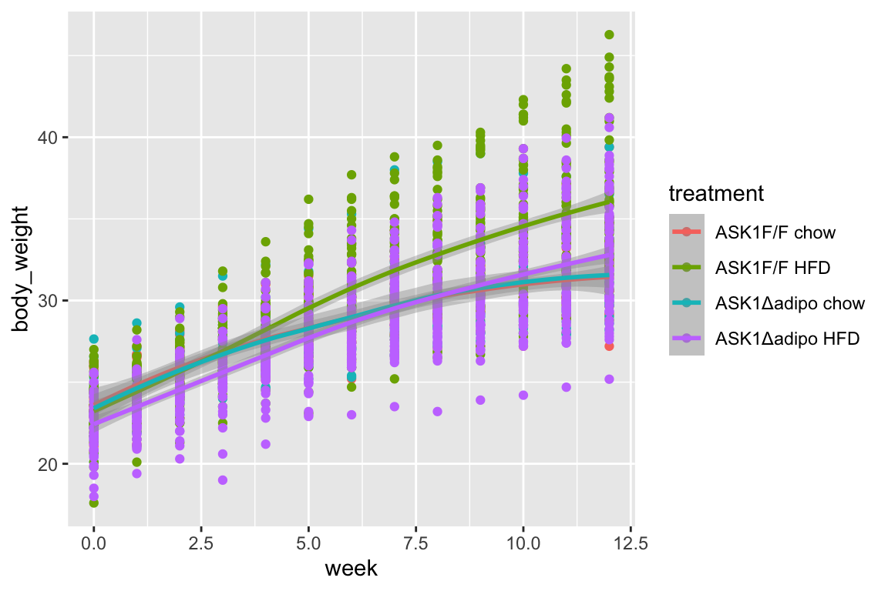
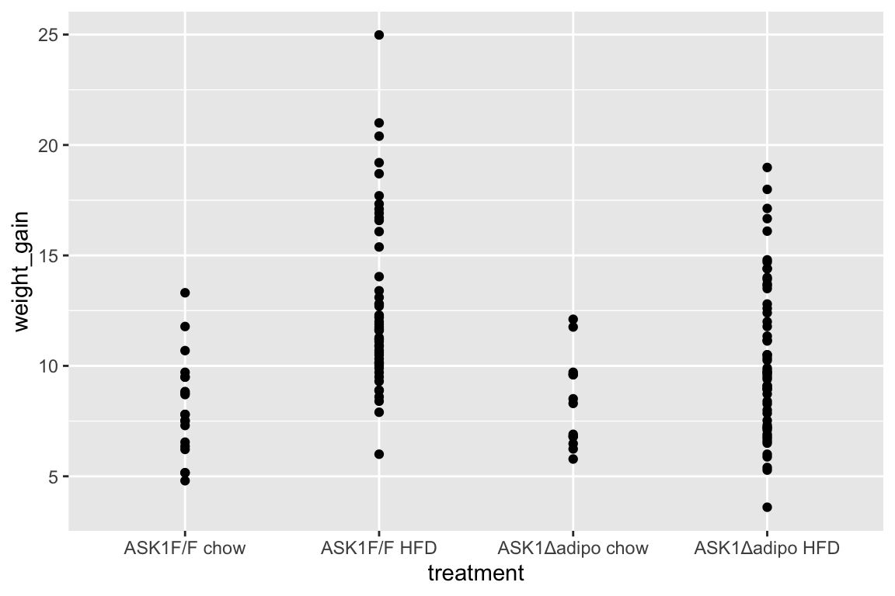
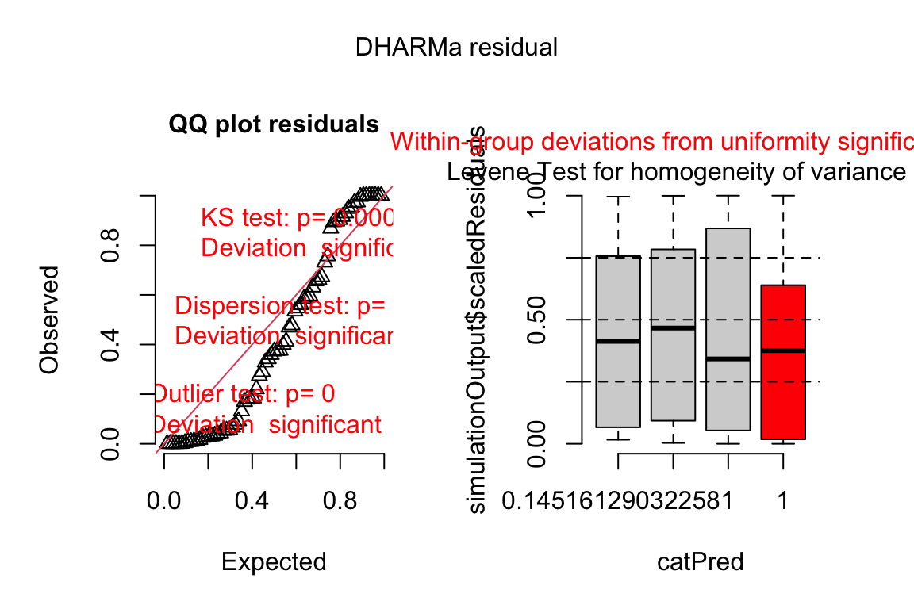
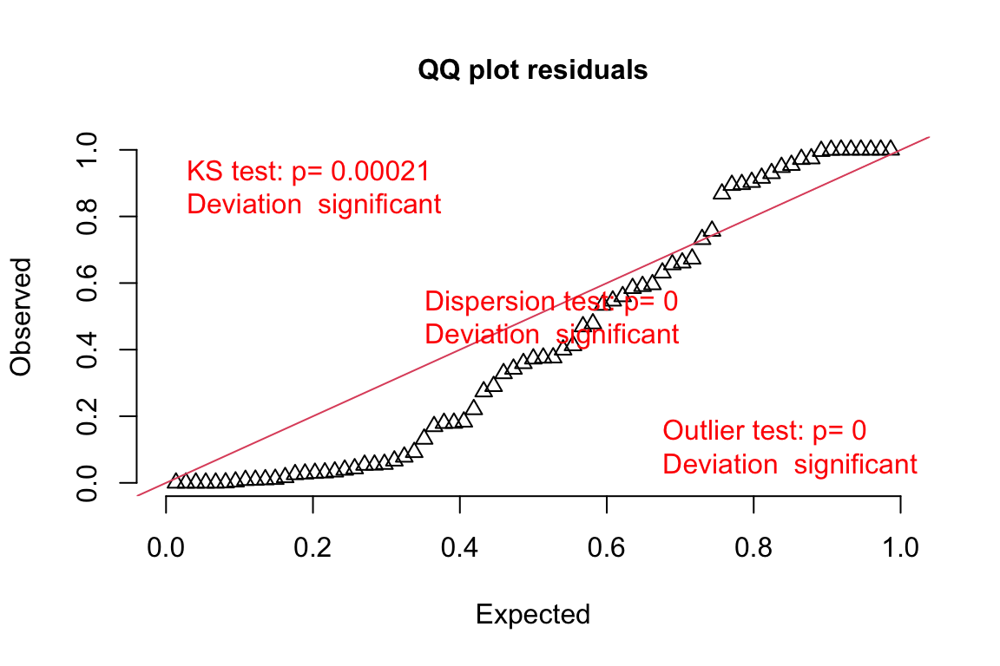
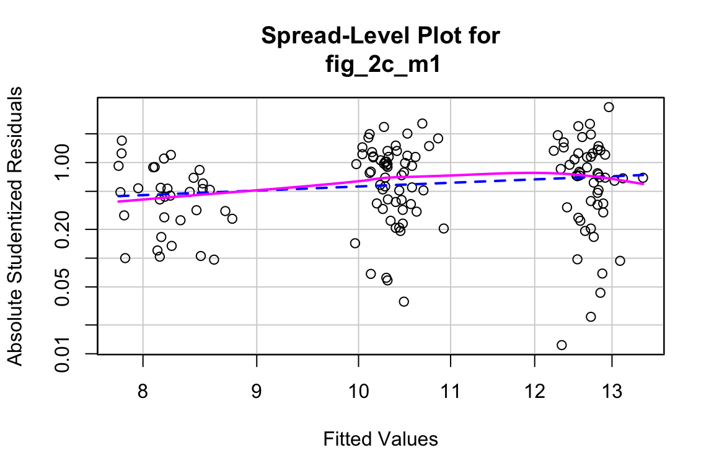
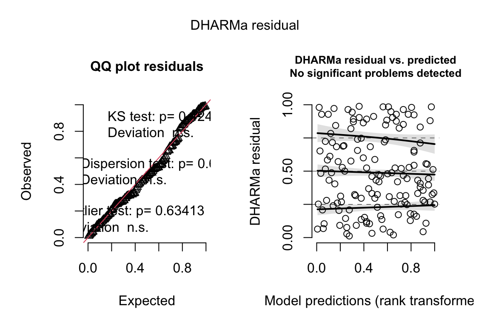
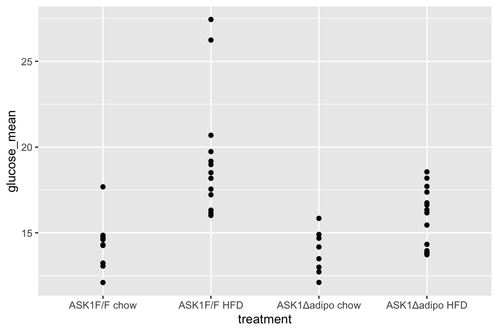

Chapter 21 Analyses for Figure 2 of “ASK1 inhibits browning of white adipose tissue in obesity”
21.1 Setup
Some plots in this document require the file “ggplotsci.R” within the “R” folder, within the project folder.
knitr::opts_chunk$set(echo = TRUE,
warning=FALSE,
message=FALSE)
# wrangling packages
library(here)
library(janitor)
library(readxl)
library(data.table)
library(stringr)
# analysis packages
library(emmeans)
library(car) # qqplot, spreadlevel
library(DHARMa)
# graphing packages
library(ggsci)
library(ggpubr)
library(ggforce)
library(cowplot)
library(lazyWeave) #pvalstring
here <- here::here
data_path <- "data"
ggplotsci_path <- here("R", "ggplotsci.R")
source(ggplotsci_path)21.2 Data source
Data source: ASK1 inhibits browning of white adipose tissue in obesity
This chunk assigns the path to the Excel data file for all panels of Figure 2. The data for each panel are in a single sheet in the Excel file named “Source Date_Figure 2”.
data_folder <- "ASK1 inhibits browning of white adipose tissue in obesity"
file_name <- "41467_2020_15483_MOESM4_ESM.xlsx"
file_path <- here(data_path, data_folder, file_name)
fig_2_sheet <- "Source Date_Figure 2"21.3 control the color palette
fig_2_palette <- pal_okabe_ito[5:6]
# fig_2_palette <- pal_okabe_ito
#fig_2_palette <- pal_nature_mod21.4 useful functions
A function to import longitudinal data from Fig 2
# function to read in parts of 2b
import_fig_2_part <- function(range_2){
fig_2_part <- read_excel(file_path,
sheet = fig_2_sheet,
range = range_2,
col_names = TRUE) %>%
data.table()
group <- colnames(fig_2_part)[1]
setnames(fig_2_part, old = group, new = "treatment")
fig_2_part[, treatment := as.character(treatment)] # this was read as logical
fig_2_part[, treatment := group] # assign treatment group
fig_2_part[, mouse_id := paste(group, .I)]
return(fig_2_part)
}# script to compute various area under the curves (AUC) using trapezoidal method
# le Floch's "incremental" auc substracts the baseline value from all points.
# This can create some elements with negative area if post-baseline values are less
# than baseline value.
# Some researchers "correct" this by setting any(y - ybar < 0 to zero. Don't do this.
auc <- function(x, y, method="auc", average = FALSE){
# method = "auc", auc computed using trapezoidal calc
# method = "iauc" is an incremental AUC of Le Floch
# method = "pos_iauc" is a "positive" incremental AUC of Le Floch but not Wolever
# method = "post_0_auc" is AUC of post-time0 values
# if average then divide area by duration
if(method=="iauc"){y <- y - y[1]}
if(method=="pos_iauc"){y[y < 0] <- 0}
if(method=="post_0_auc"){
x <- x[-1]
y <- y[-1]
}
n <- length(x)
area <- 0
for(i in 2:n){
area <- area + (x[i] - x[i-1])*(y[i-1] + y[i])
}
value <- area/2
if(average == TRUE){
value <- value/(x[length(x)] - x[1])
}
return(value)
}21.5 figure 2b – effect of ASK1 deletion on growth (body weight)
21.5.1 figure 2b – import
range_list <- c("A21:N41", "A43:N56", "A58:N110", "A112:N170")
fig_2b_wide <- data.table(NULL)
for(range_i in range_list){
part <- import_fig_2_part(range_i)
fig_2b_wide <- rbind(fig_2b_wide,
part)
}
fig_2b <- melt(fig_2b_wide,
id.vars = c("treatment", "mouse_id"),
variable.name = "week",
value.name = "body_weight")
fig_2b[, week := as.numeric(as.character(week))]
fig_2b[, c("ask1", "diet") := tstrsplit(treatment, " ", fixed=TRUE)]
fig_2b[, week_f := factor(week)]21.5.2 figure 2b – exploratory plots
qplot(x = week,
y = body_weight,
data = fig_2b,
color = treatment) +
facet_grid(ask1~diet)
- no obvious outliers
- reduced growth rate at bigger size
qplot(x = week,
y = body_weight,
data = fig_2b,
color = treatment) +
geom_smooth()
- loess smooth. Growth in ASK1F/F + HFD clearly greater than other three treatment combinations.
21.6 Figure 2c – Effect of ASK1 deletion on final body weight
21.6.1 Figure 2c – import
range_2c <- "A173:BD176"
y_cols <- c("ASK1F/F chow", "ASK1Δadipo chow", "ASK1F/F HFD", "ASK1Δadipo HFD")
fig_2c_import <- read_excel(file_path,
sheet = fig_2_sheet,
range = range_2c,
col_names = FALSE) %>%
transpose(make.names=1) %>%
data.table() %>%
melt(measure.vars = y_cols,
variable.name = "treatment",
value.name = "body_weight_gain") %>%
na.omit()
fig_2c_import[, mouse_id := paste(treatment, .I, sep = "_"),
by = treatment]21.6.2 Figure 2c – check own computation of weight change v imported value
Note that three cases are missing from fig_2c import that are in fig_2b
# change colnames to char
fig_2c <- copy(fig_2b_wide)
weeks <- unique(fig_2b[, week])
setnames(fig_2c,
old = colnames(fig_2c),
new = c("treatment", paste0("week_", weeks), "mouse_id"))
fig_2c[, weight_gain := week_12 - week_0]
fig_2c <- fig_2c[, .SD, .SDcols = c("treatment",
"week_0",
"week_12",
"weight_gain")]
fig_2c[, mouse_id := paste(treatment, .I, sep = "_"),
by = treatment]
fig_2c[, c("ask1", "diet") := tstrsplit(treatment, " ", fixed=TRUE)]
fig_2c_check <- merge(fig_2c,
fig_2c_import,
by = c("mouse_id"),
all = TRUE)
#View(fig_2c_check)21.6.3 Figure 2c – exploratory plots
qplot(x = treatment,
y = weight_gain,
data = fig_2c)
- no obvious outliers
- variance increases with mean, as expected from growth, suggests a multiplicative model. But start with simple lm.
21.6.4 Figure 2c – fit the model: m1 (lm)
fig_2c_m1 <- lm(weight_gain ~ week_0 + ask1*diet, data = fig_2c)21.6.5 Figure 2c – check the model: m1
# check normality assumption
set.seed(1)
qqPlot(fig_2c_m1, id=FALSE)
spreadLevelPlot(fig_2c_m1, id=FALSE)
##
## Suggested power transformation: 0.06419448- QQ indicates possible right skew but especially left side is squashed toward mean
- spread-level indicates variance increases with mean
For p-value, this may not be too severe but for intervals, best to account for this. Try gamma with log link (which makes biological sense for growth)
21.6.6 Figure 2c – fit the model: m2 (gamma glm)
fig_2c_m2 <- glm(weight_gain ~ week_0 + ask1*diet,
family = Gamma(link = "log"),
data = fig_2c)21.6.7 Figure 2c – check the model, m2
set.seed(1)
fig_2c_m2_sim <- simulateResiduals(fig_2c_m2, n=250)
plot(fig_2c_m2_sim) 
- well behaved QQ and spread-level
21.6.8 Figure 2c – inference from the model
coef_table <- cbind(coef(summary(fig_2c_m2)),
exp(confint(fig_2c_m2))) %>%
data.table(keep.rownames = TRUE)
coef_table[, Estimate:=exp(Estimate)]
knitr::kable(coef_table, digits = c(0,2,2,2,4,2,2))| rn | Estimate | Std. Error | t value | Pr(>|t|) | 2.5 % | 97.5 % |
|---|---|---|---|---|---|---|
| (Intercept) | 10.87 | 0.35 | 6.83 | 0.0000 | 5.53 | 21.50 |
| week_0 | 0.99 | 0.01 | -0.84 | 0.3997 | 0.96 | 1.02 |
| ask1ASK1Δadipo | 1.03 | 0.11 | 0.24 | 0.8138 | 0.83 | 1.28 |
| dietHFD | 1.56 | 0.08 | 5.45 | 0.0000 | 1.33 | 1.82 |
| ask1ASK1Δadipo:dietHFD | 0.79 | 0.13 | -1.93 | 0.0551 | 0.61 | 1.00 |
fig_2c_m2_emm <- emmeans(fig_2c_m2, specs = c("diet", "ask1"),
type = "response")
fig_2c_m2_pairs <- contrast(fig_2c_m2_emm,
method = "revpairwise",
simple = "each",
combine = TRUE,
adjust = "none") %>%
summary(infer = TRUE)fig_2c_m2_emm## diet ask1 response SE df asymp.LCL asymp.UCL
## chow ASK1F/F 8.19 0.568 Inf 7.15 9.39
## HFD ASK1F/F 12.75 0.548 Inf 11.72 13.87
## chow ASK1Δadipo 8.41 0.721 Inf 7.11 9.95
## HFD ASK1Δadipo 10.28 0.424 Inf 9.48 11.14
##
## Confidence level used: 0.95
## Intervals are back-transformed from the log scalefig_2c_m2_pairs## ask1 diet contrast ratio SE df asymp.LCL asymp.UCL
## ASK1F/F . HFD / chow 1.556 0.1263 Inf 1.328 1.825
## ASK1Δadipo . HFD / chow 1.222 0.1168 Inf 1.013 1.474
## . chow ASK1Δadipo / (ASK1F/F) 1.026 0.1127 Inf 0.828 1.273
## . HFD ASK1Δadipo / (ASK1F/F) 0.806 0.0485 Inf 0.716 0.907
## null z.ratio p.value
## 1 5.453 <.0001
## 1 2.097 0.0360
## 1 0.236 0.8134
## 1 -3.587 0.0003
##
## Confidence level used: 0.95
## Intervals are back-transformed from the log scale
## Tests are performed on the log scale- within ASK1 Cn, HFD mean is 1.6X chow mean
- within ASK1 KO, HFD mean is 1.2X chow mean
- within chow, ASK1 KO mean is 1.0X ASK1 Cn mean
- within HFD, ASK1 KO mean is 0.86X ASK1 Cn mean
# same as interaction effect in coefficient table
contrast(fig_2c_m2_emm, interaction = "pairwise", by = NULL) %>%
summary(infer = TRUE)## diet_pairwise ask1_pairwise ratio SE df asymp.LCL asymp.UCL null
## chow / HFD (ASK1F/F) / ASK1Δadipo 0.785 0.0982 Inf 0.614 1 1
## z.ratio p.value
## -1.934 0.0531
##
## Confidence level used: 0.95
## Intervals are back-transformed from the log scale
## Tests are performed on the log scale- the reduction in weight gain in the ASK1 KO mice compared to ASK1 CN is 0.785X. Notice that p > 0.05.
21.6.9 Figure 2c – plot the model
fig_2c_m2_emm_dt <- summary(fig_2c_m2_emm) %>%
data.table
fig_2c_m2_pairs_dt <- data.table(fig_2c_m2_pairs)
fig_2c_m2_pairs_dt[ , p_pretty := pvalString(p.value)]
dodge_width <- 0.8 # separation between groups
# get x positions of brackets for p-values
# requires looking at table and mentally figuring out
# Chow is at x = 1 and HFD is at x = 2
fig_2c_m2_pairs_dt[, group1 := c(1-dodge_width/4,
1+dodge_width/4,
1-dodge_width/4,
2-dodge_width/4)]
fig_2c_m2_pairs_dt[, group2 := c(2-dodge_width/4,
2+dodge_width/4,
1+dodge_width/4,
2+dodge_width/4)]
pd <- position_dodge(width = dodge_width)
fig_2c_gg <- ggplot(data = fig_2c,
aes(x = diet,
y = weight_gain,
color = ask1)) +
# points
geom_sina(alpha = 0.5,
position = pd) +
# plot means and CI
geom_errorbar(data = fig_2c_m2_emm_dt,
aes(y = response,
ymin = asymp.LCL,
ymax = asymp.UCL,
color = ask1),
width = 0,
position = pd
) +
geom_point(data = fig_2c_m2_emm_dt,
aes(y = response,
color = ask1),
size = 3,
position = pd
) +
# plot p-values (y positions are adjusted by eye)
stat_pvalue_manual(fig_2c_m2_pairs_dt,
label = "p_pretty",
y.position=c(28.5, 31, 26, 26),
tip.length = 0.01) +
# aesthetics
ylab("Weight Gain") +
scale_color_manual(values=fig_2_palette,
name = NULL) +
theme_pubr() +
theme(legend.position="top") +
theme(axis.title.x=element_blank()) +
NULL
fig_2c_gg
21.6.10 Figure 2c – report
Results could be reported using either:
(This is inconsistent with plot, if using this, the plot should reverse what factor is on the x-axis and what factor is the grouping (color) variable) Mean weight gain in ASK1F/F mice on HFD was 1.56 (95% CI: 1.33, 1.82, \(p < 0.0001\)) times that of ASK1F/F mice on chow while mean weight gain in ASK1Δadipo mice on HFD was only 1.22 (95% CI: 1.01, 1.47, \(p = 0.036\)) times that of ASK1Δadipo mice on chow. This reduction in weight gain in ASK1Δadipo mice compared to ASK1F/F control mice was 0.79 times (95% CI; 0.61, 1.00, \(p = 0.0531\)).
(This is consistent with the plot in that its comparing difference in the grouping factor within each level of the factor on the x-axis) Mean weight gain in ASK1Δadipo mice on chow was trivially larger (1.03 times) than that in ASK1F/F mice on chow (95% CI: 0.83, 1.27, \(p = 0.81\)) while mean weight gain in ASK1Δadipo mice on HFD was smaller (0.81 times) than that in ASK1F/F control mice on HFD (95% CI: 0.72 , 0.91, \(p = 0.0003\)). This reduction in weight gain in ASK1Δadipo mice compared to ASK1Δadipo mice is 0.79 times (95% CI; 0.61, 1.00, \(p = 0.0531\)).
note to research team. The big difference in p-values between weight difference on chow and weight difference on HFD might lead one to believe there is a “difference in this difference”. Using a p-value = effect strategy, this is not supported.
21.7 Figure 2d – Effect of ASK1 KO on glucose tolerance (whole curve)
21.7.1 Figure 2d – Import
range_list <- c("A179:H189", "A191:H199", "A201:H214", "A216:H230")
fig_2d_wide <- data.table(NULL)
for(range_i in range_list){
part <- import_fig_2_part(range_i)
fig_2d_wide <- rbind(fig_2d_wide,
part)
}
fig_2d_wide[, c("ask1", "diet") := tstrsplit(treatment, " ", fixed=TRUE)]
# melt
fig_2d <- melt(fig_2d_wide,
id.vars = c("treatment",
"ask1",
"diet",
"mouse_id"),
variable.name = "time",
value.name = "glucose")
fig_2d[, time := as.numeric(as.character(time))]
# for plot only (not analysis!)
shift <- 2
fig_2d[treatment == "ASK1F/F chow", time_x := time - shift*1.5]
fig_2d[treatment == "ASK1Δadipo chow", time_x := time - shift*.5]
fig_2d[treatment == "ASK1F/F HFD", time_x := time + shift*.5]
fig_2d[treatment == "ASK1Δadipo HFD", time_x := time + shift*1.5]21.7.2 Figure 2d – exploratory plots
qplot(x = time_x, y = glucose, color = treatment, data = fig_2d) +
geom_line(aes(group = mouse_id), alpha = 0.3) * no obvious unplausible outliers but two mice w/ high values in “F/F HFD” * similar at time zero (initial effect is trivial)
use AUC conditional on time 0 glucose
qplot(x = time,
y = glucose,
data = fig_2d,
color = treatment) +
geom_smooth()21.7.3 Figure 2d – fit the model
21.7.4 Figure 2d – check the model
21.7.5 Figure 2d – inference
21.7.6 Figure 2d – plot the model
21.8 Figure 2e – Effect of ASK1 deletion on glucose tolerance (summary measure)
The researchers did create a table to import but this analysis uses the mean post-baseline glucose amount as the response instead of the area under the curve of over the full 120 minutes. This mean is computed as the post-baseline area under the curve divided by the duration of time of the post-baseline measures (105 minutes). This analysis will use fig_2d_wide since there is only one a single Y variable per mouse.
21.8.1 Figure 2e – message the data
# AUC of post-baseline values
# do this after melt as we don't need this in long format)
fig_2e <- fig_2d_wide
fig_2e[, glucose_0 := get("0")]
times <- c(0, 15, 30, 45, 60, 90, 120)
time_cols <- as.character(times)
Y <- fig_2e[, .SD, .SDcols = time_cols]
fig_2e[, glucose_mean := apply(Y, 1, auc,
x=times,
method = "post_0_auc",
average = TRUE)]21.8.2 Figure 2e – exploratory plots
qplot(x = treatment, y = glucose_mean, data = fig_2e)21.8.3 Figure 2e – fit the model
fig_2e_m1 <- lm(glucose_mean ~ glucose_0 + ask1*diet, data = fig_2e)21.8.4 Figure 2e – check the model
# check normality assumption
set.seed(1)
qqPlot(fig_2e_m1, id=FALSE)spreadLevelPlot(fig_2e_m1, id=FALSE)
##
## Suggested power transformation: -0.403507321.8.5 Figure 2e – inference from the model
fig_2e_m1_coef <- coef(summary(fig_2e_m1))
fig_2e_m1_coef## Estimate Std. Error t value Pr(>|t|)
## (Intercept) 8.6835026 1.2556730 6.9154169 2.460045e-08
## glucose_0 1.2194720 0.2390919 5.1004329 8.592596e-06
## ask1ASK1Δadipo -0.3488511 0.8759124 -0.3982716 6.925479e-01
## dietHFD 4.2782121 0.7908612 5.4095613 3.185930e-06
## ask1ASK1Δadipo:dietHFD -2.7503448 1.1288320 -2.4364518 1.937783e-02fig_2e_m1_emm <- emmeans(fig_2e_m1, specs = c("diet", "ask1"))
fig_2e_m1_pairs <- contrast(fig_2e_m1_emm,
method = "revpairwise",
simple = "each",
combine = TRUE,
adjust = "none") %>%
summary(infer = TRUE)fig_2e_m1_emm## diet ask1 emmean SE df lower.CL upper.CL
## chow ASK1F/F 14.7 0.587 40 13.5 15.9
## HFD ASK1F/F 18.9 0.520 40 17.9 20.0
## chow ASK1Δadipo 14.3 0.659 40 13.0 15.7
## HFD ASK1Δadipo 15.9 0.493 40 14.9 16.8
##
## Confidence level used: 0.95fig_2e_m1_pairs## ask1 diet contrast estimate SE df lower.CL upper.CL
## ASK1F/F . HFD - chow 4.278 0.791 40 2.680 5.88
## ASK1Δadipo . HFD - chow 1.528 0.824 40 -0.138 3.19
## . chow ASK1Δadipo - (ASK1F/F) -0.349 0.876 40 -2.119 1.42
## . HFD ASK1Δadipo - (ASK1F/F) -3.099 0.715 40 -4.544 -1.65
## t.ratio p.value
## 5.410 <.0001
## 1.853 0.0712
## -0.398 0.6925
## -4.335 0.0001
##
## Confidence level used: 0.9521.8.6 Figure 2e – plot the model
fig_2e_gg <- ggplot_the_response(
fig_2e_m1,
fig_2e_m1_emm,
fig_2e_m1_pairs,
wrap_col=NULL,
y_label = "Post-baseline glucose (mmol per l)",
contrast_rows = "all",
palette = pal_okabe_ito_4,
)
fig_2e_gg
21.9 Figure 2f – Effect of ASK1 deletion on glucose infusion rate
21.9.1 Figure 2f – import
range_2f <- "A239:I240"
treatment_levels <- c("ASK1F/F", "ASK1Δadipo")
fig_2f <- read_excel(file_path,
sheet = fig_2_sheet,
range = range_2f,
col_names = FALSE) %>%
transpose(make.names=1) %>%
data.table() %>%
melt(measure.vars = treatment_levels,
variable.name = "treatment",
value.name = "glucose_infusion_rate") %>%
na.omit()
fig_2f[, treatment := factor(treatment, treatment_levels)]21.9.2 Figure 2f – exploratory plots
21.9.3 Figure 2f – fit the model
fig_2f_m1 <- lm(glucose_infusion_rate ~ treatment, data = fig_2f)21.9.4 Figure 2f – check the model
21.9.5 Figure 2f – inference
fig_2f_m1_coef <- summary(fig_2f_m1) %>%
coef()
fig_2f_m1_emm <- emmeans(fig_2f_m1, specs = "treatment")
fig_2f_m1_pairs <- contrast(fig_2f_m1_emm,
method = "revpairwise") %>%
summary(infer = TRUE)fig_2f_m1_pairs## contrast estimate SE df lower.CL upper.CL t.ratio p.value
## ASK1Δadipo - (ASK1F/F) 18.9 6.3 12 5.18 32.6 3.000 0.0111
##
## Confidence level used: 0.9521.9.6 Figure 2f – plot the model
fig_2f_m1_emm_dt <- summary(fig_2f_m1_emm) %>%
data.table
fig_2f_m1_pairs_dt <- data.table(fig_2f_m1_pairs)
fig_2f_m1_pairs_dt[ , p_pretty := pvalString(p.value)]
fig_2f_m1_pairs_dt[, group1 := 1]
fig_2f_m1_pairs_dt[, group2 := 2]
fig_2f_gg <- ggplot(data = fig_2f,
aes(x = treatment,
y = glucose_infusion_rate,
color = treatment)) +
# points
geom_sina(alpha = 0.5) +
# plot means and CI
geom_errorbar(data = fig_2f_m1_emm_dt,
aes(y = emmean,
ymin = lower.CL,
ymax = upper.CL,
color = treatment),
width = 0
) +
geom_point(data = fig_2f_m1_emm_dt,
aes(y = emmean,
color = treatment),
size = 3
) +
# plot p-values (y positions are adjusted by eye)
stat_pvalue_manual(fig_2f_m1_pairs_dt,
label = "p_pretty",
y.position=c(95),
tip.length = 0.01) +
# aesthetics
ylab("Glucose infusion rate") +
scale_color_manual(values=fig_2_palette,
name = NULL) +
theme_pubr() +
theme(legend.position="none") +
theme(axis.title.x=element_blank()) +
NULL
fig_2f_gg
21.10 Figure 2g – Effect of ASK1 deletion on tissue-specific glucose uptake
21.10.1 Figure 2g – import
range_list <- c("A244:G247", "A250:H253")
# import ASK1F/F
fig_2g_1 <- read_excel(file_path,
sheet = fig_2_sheet,
range = "A244:G247",
col_names = FALSE) %>%
transpose(make.names=1) %>%
data.table()
fig_2g_1[, treatment := "ASK1F/F"]
# import ASK1Δadipo
fig_2g_2 <- read_excel(file_path,
sheet = fig_2_sheet,
range = "A250:H253",
col_names = FALSE) %>%
transpose(make.names=1) %>%
data.table()
fig_2g_2[, treatment := "ASK1Δadipo"]
# combine
fig_2g <- rbind(fig_2g_1, fig_2g_2)21.10.2 Figure 2g – exploratory plots
21.10.3 Figure 2g – fit the model
# a more sophisticated would be a mixed model to dampen noise
fig_2g_m1_ingWAT <- lm(ingWAT ~ treatment, data = fig_2g)
fig_2g_m1_epiWAT <- lm(epiWAT ~ treatment, data = fig_2g)
fig_2g_m1_Muscle <- lm(Muscle ~ treatment, data = fig_2g)
fig_2g_m1_BAT <- lm(BAT ~ treatment, data = fig_2g)21.10.4 Figure 2g – check the model
21.10.5 Figure 2g – inference
fig_2g_infer <- function(m1){
m1_emm <- emmeans(m1, specs = "treatment")
m1_pairs <- contrast(m1_emm,
method = "revpairwise") %>%
summary(infer = TRUE)
return(list(emm = m1_emm,
pairs = m1_pairs))
}
fig_2g_m1_emm_dt <- data.table(NULL)
fig_2g_m1_pairs_dt <- data.table(NULL)
m1_list <- list(fig_2g_m1_ingWAT,
fig_2g_m1_epiWAT,
fig_2g_m1_Muscle,
fig_2g_m1_BAT)
y_cols <- c("ingWAT", "epiWAT", "Muscle", "BAT")
for(i in 1:length(y_cols)){
m1_infer <- fig_2g_infer(m1_list[[i]])
m1_emm_dt <- summary(m1_infer$emm) %>%
data.table
fig_2g_m1_emm_dt <- rbind(fig_2g_m1_emm_dt,
data.table(tissue = y_cols[i], m1_emm_dt))
m1_pairs_dt <- m1_infer$pairs %>%
data.table
fig_2g_m1_pairs_dt <- rbind(fig_2g_m1_pairs_dt,
data.table(tissue = y_cols[i], m1_pairs_dt))
}fig_2g_m1_pairs_dt## tissue contrast estimate SE df lower.CL upper.CL
## 1: ingWAT ASK1Δadipo - (ASK1F/F) 3.595000 1.468289 10 0.32344725 6.866553
## 2: epiWAT ASK1Δadipo - (ASK1F/F) 1.390238 0.669957 11 -0.08432738 2.864804
## 3: Muscle ASK1Δadipo - (ASK1F/F) 2.694048 5.675468 11 -9.79757382 15.185669
## 4: BAT ASK1Δadipo - (ASK1F/F) 33.855000 28.715230 7 -34.04572935 101.755729
## t.ratio p.value
## 1: 2.4484273 0.03435010
## 2: 2.0751153 0.06222096
## 3: 0.4746829 0.64429728
## 4: 1.1789911 0.2769181021.10.6 Figure 2g – plot the model
# melt fig_2g
fig_2g_long <- melt(fig_2g,
id.vars = "treatment",
variable.name = "tissue",
value.name = "glucose_uptake")
# change name of ASK1Δadipo label
fig_2g_long[treatment == "ASK1Δadipo", treatment := "ASK1-/-adipo"]
fig_2g_m1_emm_dt[treatment == "ASK1Δadipo", treatment := "ASK1-/-adipo"]
fig_2g_m1_pairs_dt[ , p_pretty := pvalString(p.value)]
fig_2g_m1_pairs_dt[, group1 := 1]
fig_2g_m1_pairs_dt[, group2 := 2]
fig_2g_plot <- function(tissue_i,
y_lab = FALSE, # title y-axis?
g_lab = FALSE # add group label?
){
y_max <- max(fig_2g_long[tissue == tissue_i, glucose_uptake], na.rm=TRUE)
y_min <- min(fig_2g_long[tissue == tissue_i, glucose_uptake], na.rm=TRUE)
y_pos <- y_max + (y_max-y_min)*.05
gg <- ggplot(data = fig_2g_long[tissue == tissue_i],
aes(x = treatment,
y = glucose_uptake,
color = treatment)) +
# points
geom_sina(alpha = 0.5) +
# plot means and CI
geom_errorbar(data = fig_2g_m1_emm_dt[tissue == tissue_i],
aes(y = emmean,
ymin = lower.CL,
ymax = upper.CL,
color = treatment),
width = 0
) +
geom_point(data = fig_2g_m1_emm_dt[tissue == tissue_i],
aes(y = emmean,
color = treatment),
size = 3
) +
# plot p-values (y positions are adjusted by eye)
stat_pvalue_manual(fig_2g_m1_pairs_dt[tissue == tissue_i],
label = "p_pretty",
y.position=c(y_pos),
tip.length = 0.01) +
# aesthetics
ylab("Glucose Uptake") +
scale_color_manual(values=fig_2_palette,
name = NULL) +
ggtitle(tissue_i)+
theme_pubr() +
theme(legend.position="top") +
theme(axis.title.x = element_blank(),
axis.text.x = element_blank(),
axis.ticks.x = element_blank()) +
NULL
if(y_lab == FALSE){
gg <- gg + theme(axis.title.y = element_blank())
}
if(g_lab == FALSE){
gg <- gg + theme(legend.position="none")
}
return(gg)
}
y_cols <- c("ingWAT", "epiWAT", "Muscle", "BAT")
legend <- get_legend(fig_2g_plot("ingWAT", y_lab = TRUE, g_lab = TRUE))
gg1 <- fig_2g_plot("ingWAT", y_lab = TRUE, )
gg2 <- fig_2g_plot("epiWAT")
gg3 <- fig_2g_plot("Muscle")
gg4 <- fig_2g_plot("BAT")
top_gg <- plot_grid(gg1, gg2, gg3, gg4,
nrow=1,
rel_widths = c(1.15, 1, 1.05, 1.1)) # by eye
plot_grid(top_gg, legend,
nrow=2,
rel_heights = c(1, 0.1))
21.11 Figure 2h
21.12 Figure 2i – Effect of ASK1 deletion on liver TG
range_2i <- "A265:G266"
treatment_levels <- c("ASK1F/F", "ASK1Δadipo")
fig_2i <- read_excel(file_path,
sheet = fig_2_sheet,
range = range_2i,
col_names = FALSE) %>%
transpose(make.names=1) %>%
data.table() %>%
melt(measure.vars = treatment_levels,
variable.name = "treatment",
value.name = "liver_tg") %>%
na.omit()
fig_2i[, treatment := factor(treatment, treatment_levels)]
# View(fig_2i)21.12.1 Figure 2i – fit the model
fig_2i_m1 <- lm(liver_tg ~ treatment, data = fig_2i)21.12.2 Figure 2i – check the model
set.seed(1)
qqPlot(fig_2i_m1, id=FALSE)spreadLevelPlot(fig_2i_m1, id=FALSE)##
## Suggested power transformation: 1.294553- The QQ plot looks okay, in the sense that the observed data points (open circles) fall within the boundaries set by the dashed line.
- spread level looks pretty good
- Fit normal model
21.12.3 Figure 2i – inference
fig_2i_m1 <- lm(liver_tg ~ treatment, data = fig_2i)
fig_2i_m1_coef <- cbind(coef(summary(fig_2i_m1)),
confint(fig_2i_m1))
fig_2i_m1_emm <- emmeans(fig_2i_m1, specs = "treatment")
fig_2i_m1_pairs <- contrast(fig_2i_m1_emm,
method = "revpairwise") %>%
summary(infer = TRUE)fig_2i_m1_pairs## contrast estimate SE df lower.CL upper.CL t.ratio p.value
## ASK1Δadipo - (ASK1F/F) -21.6 7.05 10 -37.3 -5.9 -3.066 0.0119
##
## Confidence level used: 0.9521.12.4 Figure 2i – plot the model
fig_2i_m1_emm_dt <- summary(fig_2i_m1_emm) %>%
data.table
fig_2i_m1_pairs_dt <- data.table(fig_2i_m1_pairs)
fig_2i_m1_pairs_dt[ , p_pretty := pvalString(p.value)]
fig_2i_m1_pairs_dt[, group1 := 1]
fig_2i_m1_pairs_dt[, group2 := 2]
fig_2i_gg <- ggplot(data = fig_2i,
aes(x = treatment,
y = liver_tg,
color = treatment)) +
# points
geom_sina(alpha = 0.5) +
# plot means and CI
geom_errorbar(data = fig_2i_m1_emm_dt,
aes(y = emmean,
ymin = lower.CL,
ymax = upper.CL,
color = treatment),
width = 0
) +
geom_point(data = fig_2i_m1_emm_dt,
aes(y = emmean,
color = treatment),
size = 3
) +
# plot p-values (y positions are adjusted by eye)
stat_pvalue_manual(fig_2i_m1_pairs_dt,
label = "p_pretty",
y.position=c(95),
tip.length = 0.01) +
# aesthetics
ylab("Liver TG (µmol per g liver)") +
scale_color_manual(values=fig_2_palette,
name = NULL) +
theme_pubr() +
theme(legend.position="none") +
theme(axis.title.x=element_blank()) +
NULL
fig_2i_gg21.12.5 Figure 2i – report the model
Mean TG level in ASK1Δadipo mice on a high-fat diet was 21.6 µmol/g less than that in ASK1F/F mice on a high-fat diet (95% CI: -37.3, -5.9, \(p = 0.012\)) (Figure xxx).